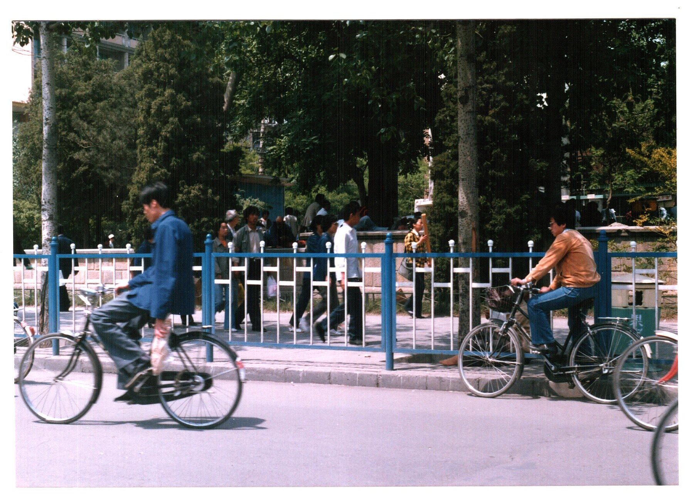
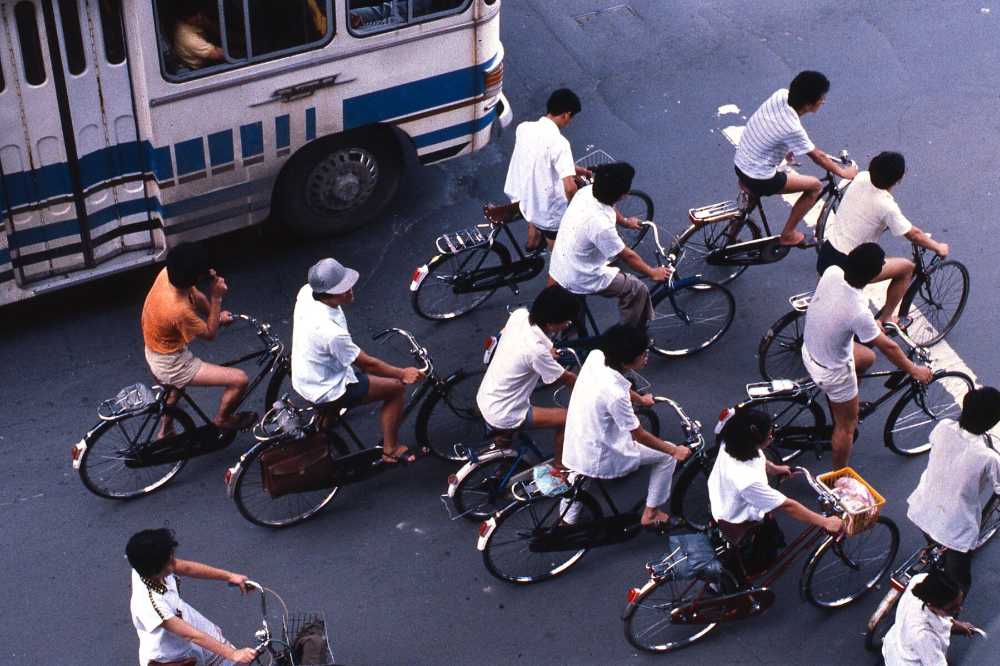
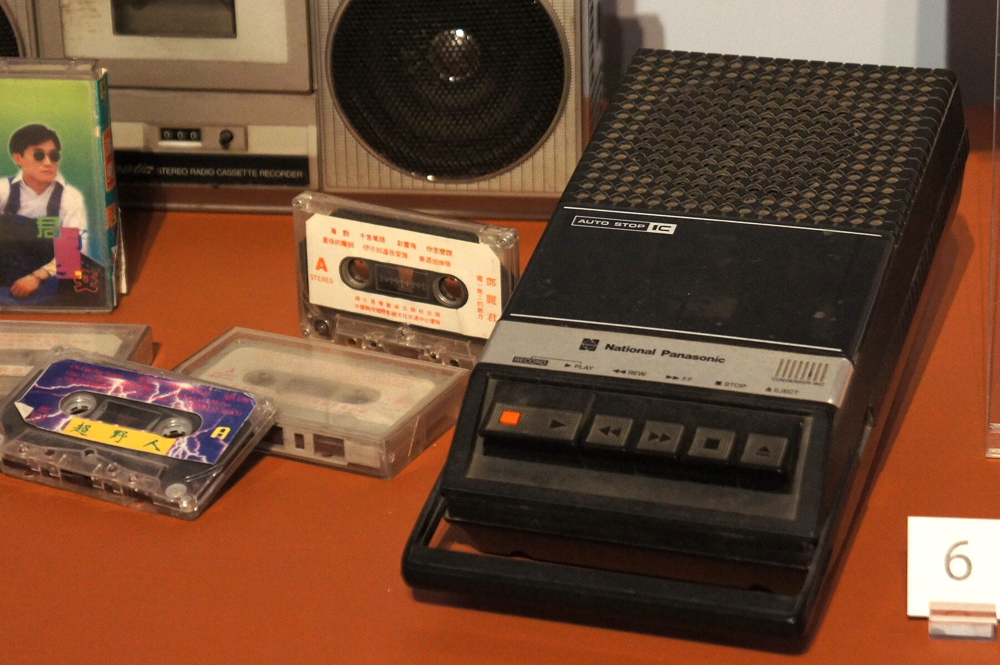
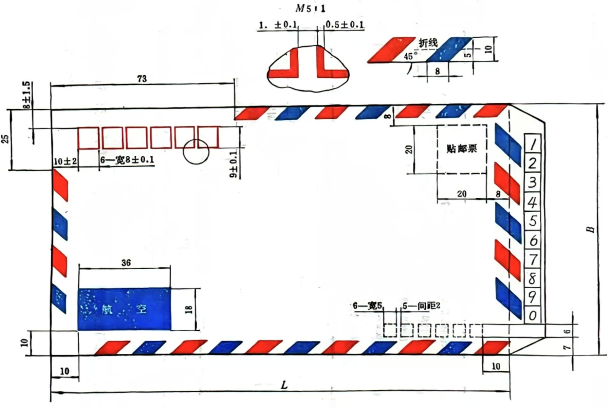

1985年秋天的一个星期六，你被厨房里的声音吵醒。
最先听见的是锅盖。水快烧开的时候，蒸汽把锅盖一下一下顶起来，发出很轻的“哒、哒”声。母亲在厨房里忙，父亲已经洗完脸，正蹲在门口给自行车后轮打气。你从床上坐起来，先看见的是父亲挂在椅背上的蓝色工作服，然后才想起今天没有课。
你20岁，在本市一所大学读二年级。平时住宿舍，周末偶尔回家。所谓“家”，是父亲单位分的一套两间房。面积不大，却已经比你小时候宽敞不少。你和妹妹过去睡一间，父母睡另一间；妹妹去年去外地上学以后，那间屋子终于大部分时间归你使用，可母亲还是会进去晾衣服、放被子，父亲找东西时也从不敲门。
因此它还不能算真正属于你。
书桌上压着一本杂志，下面藏着小梅前几天写给你的信。你昨晚回来后读了两遍，睡觉前特意把它塞进大学英语课本里。今天早上睁开眼，你第一件事竟然是看看那本书有没有被人动过。
还好，在原处。
吃早饭的时候，母亲问：“学校今天没活动？”
“下午有电影。”
父亲抬起头：“学校放的？”
“不是。跟同学去电影院。”
母亲看了你一眼，没有追问。你低头喝粥，知道她大概已经猜到那个“同学”是谁。
父亲却完全没注意这些。他正盘算另一件事：“你毕业还有两年多吧？”
“差不多。”
“那时候不知道能分到哪里。能留本市最好。”
你说：“还早呢。”
父亲摇摇头：“早什么？分配是大事。你们学校不错，只要别自己瞎折腾，工作总归有的。”
你没有接话。
父亲说的“分配”，在你听来再普通不过。1985年，高校毕业生分配制度已经开始改革；但对你这样的普通大学生来说，就业仍然强烈地嵌在国家计划、学校推荐和单位接收的体系里。今天熟悉的招聘网站、简历海投、秋招春招，还不是你理解毕业去向的主要方式。
所以你真正会担心的，通常不是“毕业后有没有工作”，而是：会去哪个城市、哪个行业、哪个单位。
父亲吃完最后一口馒头，拎起帆布包准备出门。
你问：“今天不是星期六吗？”
“厂里有事。”
“加班？”
“过去看看。”
他说得非常自然。
 编辑复原图｜“分配通知书”为基于1985年高校毕业分配制度与改革背景制作的视觉复原，并非真实档案原件。
编辑复原图｜“分配通知书”为基于1985年高校毕业分配制度与改革背景制作的视觉复原，并非真实档案原件。
你忽然想起来，小时候好像从来没有听父亲说过“换工作”。他在这家厂待了很多年，再过很多年，大概也还会在那里。你认识的不少叔叔阿姨都是这样：同一个厂、同一个医院、同一所学校，从二十几岁一直干到退休。
这和你今天理解的一份工作不太一样。
父亲去的不是一家随时可以辞职跳槽的“公司”。
他去的是他的单位。
 编辑复原图｜呈现大型国企和事业单位常见的“单位办社会”逻辑。不同单位的实际条件存在明显差异。
编辑复原图｜呈现大型国企和事业单位常见的“单位办社会”逻辑。不同单位的实际条件存在明显差异。
单位给他发工资，也可能决定家里什么时候能改善住房；厂里有食堂、医务室、澡堂，小时候你甚至上过厂里的幼儿园。逢年过节发什么东西，谁家孩子招工，谁准备结婚，谁在排队等房子，很多事情都和这一个组织发生联系。
父亲这一辈子有很大一部分，被装在“单位”两个字里面。
所以当他说“有个好单位比什么都强”时，他想的并不仅仅是每个月那几十块钱工资。
他想的是一整套可以看见的未来。
而你还没有意识到，再过几年，这句话会越来越频繁地被年轻人质疑。
上午十点多，你出门去书店。
走到百货商店附近，有人在后面按了两下车铃。
“哎！”
你回头，看见建军。
你差一点没认出来。
他骑着一辆很新的自行车，车漆亮得刺眼，后座上还捆着一个鼓鼓囊囊的旅行包。更显眼的是他的衣服。你记得上一次见他，他还穿一件洗得有点发白的蓝夹克，现在身上换成了一件深色外套，式样你在本地商店里很少见。
“新车？”你摸了摸车把。
“嗯。”
“哪来的？”
“买的呗。”
“我当然知道是买的。多少钱？”
建军笑起来：“大学生怎么这么俗，一见面就问钱。”
你也笑：“你现在不就是专门挣钱的吗？”
这句话要是放在一年前，建军大概会不高兴。
高中毕业以后，他连续两次高考都没考好，在家待了很长一段时间。那时候最怕的就是碰见亲戚，因为所有人的第一句话都是：“工作安排了吗？”
“还没有。”
“街道没给安排？”
“再等等。”
一个20岁的年轻人如果暂时没有工作，今天不算什么稀奇事。可在那个年代的城市里，大多数成年人都属于某个单位。你是哪家厂的、哪个学校的、哪个商店的，好像一个人总要被放进某个格子里，身份才算完整。
建军那时候没有这个格子。
他母亲急得四处托人，他父亲见人总说孩子“不争气”。后来，一个在南方跑生意的远房亲戚带他出去了一趟。第一次回来，他只是帮人拎货；第二次，他自己拿了一些衣服回来卖；再后来，他干脆不等街道安排了。
父亲听说以后评价只有一句：
“好好的年轻人，去摆摊。”
今天“创业”两个字天然带着一点勇气和光环。1985年不是。至少在很多城市家庭里，一个有正式工作的国营职工，社会评价往往比街边做买卖的年轻人稳定得多。个体经营意味着挣钱，也意味着没有那套熟悉的保障。
问题在于，建军开始真的挣钱了。

北京，1988。Derzsi Elekes Andor / CC BY-SA 3.0。作为近年代城市生活背景，不代表故事具体地点。
“中午一起吃饭？”他问。
“我下午还有事。”
“小梅？”
你愣了一下。
“你怎么知道？”
“你以为就你自己不知道？”
他哈哈大笑，把车推到路边。你们进了一家小饭馆，坐下以后，他从旅行包里掏出一件女士上衣，让你摸面料。
“怎么样？”
“我又不穿这个。”
“你看样式。”
样式确实比本地柜台上的衣服新。
“广州那边这种东西多得很。”他说，“拿回来就有人要。”
“你最近总去广州？”
“去过两次。下一次说不定去深圳。”
你第一次认真听他说“深圳”。
这个地名你当然知道，但它在你脑子里还不是后来那座高楼密布的城市。它更像报纸上的一个词，一个很远、很热、听说“政策不一样”的地方。
你问：“真能挣很多？”
建军夹起一口菜：“够花。”
“到底多少？”
他还是不说。
“怕我借钱？”
“不是。”他笑了一下，过了一会儿却忽然认真起来，“其实我也不知道能干多久。”
“什么意思？”
“今天让你卖，明天呢？谁知道。货会不会压手里，钱能不能回来，也没人管你。你以为我不怕？”
这句话让你有点意外。
从他那辆新自行车和那件漂亮夹克上，你看到的是一个突然发了财的老同学。可他自己看到的，是一种你父亲绝不会接受的生活：这个月可能挣很多，下个月也许一分钱没有。
“那你还干？”
“有钱挣为什么不干？”
他说完停了一下，又问你：“你毕业一个月能挣多少？”
你说不准。
“反正国家给你分工作。”
“对。”
“我不行。”他说，“我要等他们给我安排，不知道得等到什么时候。”
你第一次发现，你和建军面对的并不是同一道题。
对于你来说，大学意味着一条还算清楚的道路。毕业，分配，进单位，领工资。好坏暂且不论，至少大概知道下一站在哪里。
建军却已经提前跳出了那张路线图。
过去，这可能意味着“没有着落”。
现在，它却开始有了另一个名字：机会。
 编辑视觉｜1985年全国职工平均年工资约1148元，一万元约为8.7年平均工资。这里比较的是收入尺度，不是今天的购买力换算。
编辑视觉｜1985年全国职工平均年工资约1148元，一万元约为8.7年平均工资。这里比较的是收入尺度，不是今天的购买力换算。
他临走前从口袋里掏出一张折起来的纸，上面写着一个广州的地址。
“以后真不想上班了，来找我。”
“我干吗不上班？”
“你现在当然这么说。”
他骑上车，又回头补了一句：“听说南方现在万元户多得很。”
你笑他吹牛。
可等他走远，你却忍不住在心里算了一下。
一万元。
父亲一年能挣多少？
你突然发现这个数字大得不像日常生活里的钱。
下午两点，你在电影院门口看见小梅。
她比约好的时间晚了七分钟。
如果是今天，你大概已经发了两条消息问“到哪了”；1985年的你只能站在那里等。你甚至不知道她是还没出门、公交车晚了，还是临时被家里留住。
第六分钟的时候，你已经开始怀疑是不是自己记错了时间。
第七分钟，她从街对面跑过来。
你先看见那条裙子。
红色。
不是特别夸张的红，但在一片蓝、灰、白色衣服中已经足够显眼。
“看什么？”她问。
“新买的？”
“好看吗？”
你说：“还行。”
小梅瞪你一眼：“不会说话。”
其实是很好看。
你只是不好意思说。
几年前，成年人看到年轻女孩穿这样的裙子，可能还会觉得太扎眼。现在街上的颜色正在明显变多。年轻人开始穿牛仔服、喇叭裤、颜色鲜艳的上衣，戴过去少见的大框眼镜。服装慢慢不再只是为了整齐和耐穿，它开始承担另一件事情：告诉别人，我喜欢什么。
1982。H. Grobe / CC BY-SA 3.0。图中人物与本章角色无关，用于呈现80年代初城市青年服装色彩的变化。
电影还有十几分钟开场，你们没有立刻进去。小梅问：“上午去哪了？”
“碰见建军。”
“他现在是不是很有钱？”
“你们怎么都知道？”
“我同学上周还看见他在市场卖衣服。”
“你觉得做个体户怎么样？”
小梅想了一会儿：“挣钱呗。”
“就这样？”
“那还要怎样？”
她在一家国营商店上班。去年没考上大学，家里托关系帮她进了现在的单位。工作稳定，工资不算高，每天站柜台。她母亲很满意，认为女孩子有这样的工作已经很好。
小梅自己却不太满意。
进场以后，她一直没怎么看银幕。电影演到一半，她忽然侧过头，小声问：“你们学校夜大学收不收外面的？”
“你想上？”
“我想再学点东西。”
“你妈同意？”
“所以我才没跟她说。”
黑暗里，你看不清她的表情。
过了一会儿，她又问：“你毕业以后是不是就分工作了？”
“应该吧。”
“真好。”
你想说“你现在不是也有工作吗”，话到嘴边却没说。
因为你知道她羡慕的不是那份工作。
她羡慕的是还有得选。
电影散场以后，你们没有马上回家。两个人推着自行车沿街慢慢走，到公园门口又买了两支冷饮。真正能单独待着的地方不多，坐在公园长椅上，本身就已经很像约会。

1987。GeorgeLouis / BeenAroundAWhile / CC BY-SA 3.0。用于说明80年代城市公共空间与自行车生活氛围。
你们聊学校、工作，又聊到建军。
小梅说：“我妈现在倒觉得个体户也不错了。”
你笑：“去年她不是还说摆摊没出息？”
“现在人家挣钱了啊。”
“那你找对象是不是也得找万元户？”
她拿手里的冰棍木棒敲你：“滚。”
你笑着躲开。
这件事让你突然意识到，很多东西改变得比大人承认得更快。去年还会被人看不起的职业，今年只要挣到了钱，评价就可能悄悄变化。
天快黑的时候，你骑车送小梅回家。
自行车在街边并排走了一阵。谁也没说话。快到她家附近，她让你停车。
“就送到这吧。”
“还远呢。”
“前面都是我们家邻居。”
你马上明白。
她下车以后整理了一下裙子，又问：“你晚上回学校？”
“嗯。”
“那到宿舍给我写信。”
你笑：“都见一天了还写什么？”
她说：“爱写不写。”
然后骑车走了。
你站在原地，看着自行车后面的红色反光片一点一点远去。
这是那个年代很典型的爱情距离。
你们可以牵手，可以写很长的信，可以在电影院里坐在一起两个小时，却没有真正属于自己的地方。你住学校宿舍，她住父母家，家里永远有人，邻居永远认识你。
今天的人谈恋爱时首先会考虑去哪家餐厅、哪间咖啡馆、订不订酒店。那时候很多年轻人更基础的问题是：
哪里能让两个人安静待一会儿？
所以公园、电影院、自行车、江边、校园，才会如此频繁地出现在上一代人的青春记忆里。
不是因为他们天生比今天的人浪漫。
而是因为他们没有那么多地方可去。
你回到学校的时候，宿舍已经很热闹。
八个人的房间，有人在洗脚，有人在写信，有人趴在床上看杂志。窗边那张桌子上摆着一台双卡录音机，老郑正在翻录一盘磁带。
“什么歌？”
“别碰，还没录完。”
你凑过去看磁带盒。上面是手写的歌名，字迹来自好几个人，显然已经转手很多次。
“哪来的？”
“外语系借的。”
旁边有人说：“邓丽君。”
另一个正在看书的人头也没抬：“小点声。”
“看什么呢？”
他把封面翻过来。
尼采。
你笑了：“你看得懂吗？”
“看不懂才看。”
一屋人都笑。

香港历史博物馆展出的20世纪80年代初流行录音机与磁带。Mk2010 / CC BY-SA 3.0；不是本章宿舍中的具体型号。
这样的场景今天看起来有点不可思议。一个工科大学的普通宿舍里，有人听港台流行歌曲，有人读一本并没有完全弄懂的西方哲学书，床头还可能压着诗集、《小说月报》和英语教材。
文化在那个年代有一种很奇怪的热度。
一个会写诗的人可能真的在校园里受到欢迎。文学社招新会有人报名。几个人晚上熄灯以后，可以争论一篇小说为什么好，争论一个诗人到底想说什么，甚至争论“人生究竟有没有意义”。
并不是因为那代大学生都比后来的人更深刻。
更可能的原因是，门刚刚打开。
过去很长时间难以接触的思想、文学、电影、音乐，在短短几年里同时涌了进来。很多人像突然走进一个巨大的图书馆，不知道该从哪里开始，只能拼命地看。
这时候，老郑终于把磁带录完，按下播放键。
声音响起来。
一个女人轻轻唱歌。
你坐在床边，忽然想起下午小梅那条红裙子。
歌曲里唱的是喜欢、思念和分离。没有宏大的主题，只是一个人想另一个人。
你没有觉得这有什么了不起，只觉得很好听。
但很多事情就是这样进入一个时代的。它们不会先敲门告诉你“价值观正在发生变化”，而是先变成一盘磁带、一条裙子、一封情书。等很多年以后人们再回头看，才发现那些看起来很小的东西，已经把“个人”两个字慢慢放回了生活中心。
门忽然被推开。
志强回来了。
他怀里夹着一本英语书和一封信。
“美国来的。”
屋里马上有人抬头。
“谁？”
“我师兄。”
志强是宿舍里最早认真准备英语考试的人。他最近总念叨一个你们还不太熟悉的词：
TOEFL。
最开始你问他是什么意思，他一本正经地纠正你的发音，然后说：“托福。去美国留学要考的。”
“你真想去？”
“当然。”
“毕业不是分配工作吗？”
“谁说有工作就不能出去？”
这个回答，你白天刚刚听过一个相似版本。
建军说，有钱挣为什么不干。
志强现在说，有工作为什么不能走。
你突然觉得身边的人都开始不按父亲熟悉的逻辑回答问题了。
大家围过来看那封信。
信纸不厚，最吸引人的反而是一张照片。照片上的年轻人穿着夹克，站在一条陌生的街道旁边，后面停着几辆汽车。

1978年中华人民共和国国家标准航空信封图样（1979年生效），Public Domain。用于说明航空信实物形态，不冒充故事中的那封信。
有人问：“这是纽约？” 志强摇头：“不是，好像在波士顿附近。” 又有人追问：“美国人是不是家家都有车？信里写了吗？”
志强翻到第二页：“他说平时上学，还打工。” 有人问：“干什么？” “餐馆。” “端盘子？” “差不多。”
有人笑：“好好的大学生跑美国端盘子。” 志强说：“端盘子也挣美元。” 这句话一下让宿舍安静了。
然后所有人开始问钱：“一个小时多少？一个月能挣多少？换成人民币多少？” 志强照着信里的数字念，有人真的拿纸笔算起来。你也跟着算。
算完以后，那个结果大得让人有点不相信。过了几秒，老郑问：“那美国东西不也贵吗？” 没人知道。又有人问房租、问看病多少钱，仍然没人知道。
那封信没有写这些。
所以到了最后，你们真正拥有的仍然只是几个碎片：美国的街道、汽车、美元，以及一个中国大学生在那里一边念书一边打工。
可仅仅这些碎片，就已经足够让宿舍里几个从来没有出过国的20岁年轻人沉默很久。
第二天早上，你又回家拿东西。
父亲正在阳台修自行车。
你蹲在旁边看了一会儿，忽然说：“我们宿舍有个人想去美国。”
父亲没抬头：“干什么？”
“留学。”
“毕业以后不是有工作吗？”
“有。”
“那去美国干什么？”
你想了想：“想出去看看。”
父亲终于停下手里的活，看了你一眼。
“外面有什么好看的？”
你笑：“我怎么知道，我又没去过。”
“那不就行了。”
他继续拧螺丝。
你原以为这场谈话结束了，过了一会儿父亲又说：“你们现在就是想法多。工作安排好，安安稳稳过日子，有什么不好？”
这句话你小时候听过很多次。
以前没有觉得有什么问题。
现在却忽然不知道怎么回答。
父亲这一代人真正珍惜的东西，其实很容易理解。他年轻时经历过物质匮乏和生活的不确定，所以一份正式工作、一份准时发放的工资、一个可靠的单位，以及未来可能分到的一套住房，本身就足以组成一种成功的人生。
你很难告诉他，这些东西对你当然也重要。
只是好像已经不够了。
因为你这一代人的成长过程中，不断有人打开新的门给你看。
录音机让你第一次听见完全不同的歌；电影让你看见陌生城市；书告诉你世界上存在过去没听过的思想；建军告诉你，一个没有正式单位的人也能挣钱；小梅告诉你，一个已经有稳定工作的女孩仍然可能不满意自己的人生；志强和那封美国来信则让你第一次真正意识到，一个中国大学生毕业以后，竟然还可以不接受眼前已经安排好的生活。
你忽然明白，父亲和你的区别也许不在于谁更勇敢。
而在于你们害怕的东西不同。
父亲害怕的是失去已经拥有的稳定。
你开始害怕的，却是另外一件事：
如果这一辈子真的只有这一条路呢？
这个念头在1985年还是很新的。
但它以后会越来越强。
星期天晚上，你回到宿舍。
其他人已经陆续睡了。
你没有马上关灯。
桌上摆着几样东西。
一本昨天没看完的小说。
建军写给你的那个广州地址。
小梅下午托人带到学校的一封短信。
还有那封从美国寄来的信，志强看你感兴趣，借给你一晚。
你先打开小梅的信。
内容其实很短。她说自己问过了，附近确实有夜大学，她准备去报名，只是还没有告诉母亲。最后写了一句：
“你不要跟别人说。”
你看完笑了一下，把信重新折好。
建军的那张纸也在旁边。
一个广州地址，一串电话号码。
如果你愿意，或许暑假真的可以去看看。
再旁边，是那封美国信。
你已经读过一遍，却又从头看了一次。写信的人说自己很忙，课多，英语还是跟不上，打工回来常常已经很晚。他没有把美国写成天堂，也抱怨了很多事情。可是照片上的城市仍然让你挪不开眼睛。
四件东西放在同一张桌上，像四条完全不同的路。
场景复原图｜工作证、广州地址、夜大学材料、TOEFL与航空信。画面用于组织叙事，不是历史现场照片。
父亲希望你大学毕业以后进入一个好单位。他认为那是一种经过几十年生活检验的可靠选择。
建军已经提前从这套系统里跑了出去。他没有稳定，却第一次挣到了让同龄人羡慕的钱。
小梅没有离开自己的单位，却开始偷偷寻找一条能够改变自己的路。她想继续读书，哪怕家里并不觉得那有什么必要。
志强则在准备托福。他想去一个你们只在照片和电影里见过的国家。
而你呢？
你原来并不觉得这是什么问题。
两年前考上大学的时候，父亲很高兴，亲戚也说你“以后不用愁了”。你自己也是这样想的。大学毕业以后自然会有一个去处，然后工作、结婚、分房，像周围的大多数成年人一样生活。
那是一张已经画好了大致路线的地图。
可是现在，地图外面好像突然多出了很多地方。
广州。
深圳。
美国。
甚至还有一种更难说清楚的东西——按照自己的想法生活。
如果一个来自四十年以后的人突然坐到你旁边，他当然可以告诉你很多答案。
他知道深圳以后会是什么样，知道商品房、股票、互联网、智能手机和电商。他知道一些最早发财的人后来破产，也知道一些当年人人看不起的小商贩最终成为企业家；知道有人辞掉铁饭碗以后抓住了时代，也有人为当初的决定后悔很多年；知道一些人去了美国以后改变了命运，也知道另一些人在那里做了很久并不体面的工作；知道有人最终留在海外，有人又回到中国。
因为他知道结局，所以他很容易替你判断。
可这种判断对1985年的你没有任何帮助。
因为真正生活在那个晚上，你什么都不知道。
你只拥有眼前这些有限的信息，以及自己20年的生活经验。
宿舍已经熄灯。
外面的走廊还有脚步声。
不知道哪个房间的录音机开得很小，一首听不清歌词的歌从墙那边传过来。你躺在床上，想起父亲早上骑车去工厂的背影，想起建军的新自行车，想起小梅那条红裙子，又想起照片里陌生的美国街道。
它们竟然存在于同一个1985年。
一边是单位、工资、分房和一眼能够看到几十年以后的稳定生活；另一边是刚刚出现的市场、个人选择，以及遥远得几乎不真实的外部世界。
过去很多年轻人的人生，更像一道已经预留了答案的填空题。
现在，它开始变成一道选择题。
而选择题真正令人不安的地方，并不是选项太少。
恰恰是第一次有人告诉你：
也许不止一个答案。
你20岁。
没有房，没有车，没有手机，也没有互联网。在学校里，你和七个男生挤一间宿舍；回到家，也没有一个真正完全属于自己的房间。
从今天看，你拥有的东西似乎很少。
可就在这一年，你和无数同龄人开始拥有一种父辈年轻时并不常见的东西：
想象另一种人生的能力。
至于哪一种人生更好，没有老师知道，没有父母知道，也没有报纸知道。整个国家都正在试着回答。
1985年的他们什么都不知道。
他们只能往前走。
历史已经给了我们答案。
可生活在历史里的人，没有。
那是一个没有剧透的中国。